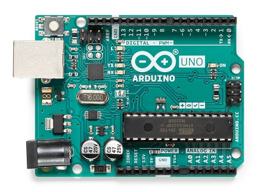
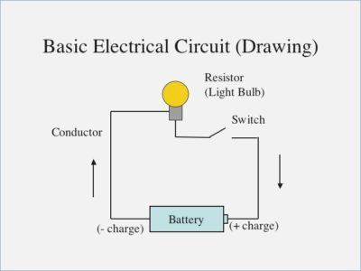

Introduction To Electronics
TOC
Electrical And Electronics Engineering
Electrical and electronics engineering, the branch of
engineering concerned with the practical applications of
electricity in all its forms, including those of the field
of electronics. Electronics engineering is that branch of
electrical engineering concerned with the uses of the
electromagnetic spectrum and with the application of such
electronic devices as integrated circuits and transistors.In engineering practice, the distinction between electrical
engineering and electronics is usually based on the comparative
strength of the electric currents used. In this sense, electrical
engineering is the branch dealing with "heavy current"—that is,
electric light and power systems and apparatuses—whereas
electronics engineering deals with such "light current" applications
as telephone and radio communication, computers, radar,
and automatic control systems.
source: https://www.britannica.com/technology/electrical-and-electronics-engineering
Electronics And Robotics
Electronic devices can simply be controlled by adding a
microcontroller. When we program an electronic device
to do specific tasks (particularly with sensors),
we are now dealing with robotics.
The Microcontroller
A microcontroller is a compact integrated circuit designed
to govern a specific operation in an embedded system. A typical
microcontroller includes a processor, memory and input/output
(I/O) peripherals on a single chip.Sometimes referred to as an embedded controller or microcontroller
unit (MCU), microcontrollers are found in vehicles, robots, office
machines, medical devices, mobile radio transceivers, vending machines
and home appliances, among other devices. They are essentially simple
miniature personal computers (PCs) designed to control small features of
a larger component, without a complex front-end operating system (OS).
source: https://internetofthingsagenda.techtarget.com/definition/microcontroller
Arduino UNO

Circuit
In electronics, a circuit is a closed path that allows
electricity to flow from one point to another. It may include various
electrical components, such as transistors, resistors,
and capacitors, but the flow is unimpeded by a gap or
break in the circuit.
source: https://techterms.com/definition/circuit

Two Basic Types of Circuits

Series Circuit
a series circuit comprises a path along which the
whole current flows through each component.
Parallel Circuit
a parallel circuit comprises branches so that the
current divides and only part of it flows through any branch.
source: https://www.britannica.com/technology/electric-circuit#ref22644
Tech Terms
open circuit - an electrical circuit that is not complete.
electric current - the rate at which electric
charge flows past a point on the electric circuit.
ground - In electronics and electrical engineering, it is
by convention, we define a point in a circuit as a reference
point. This reference point is known as ground (or GND) and
carries a voltage of 0V. Voltage measurements are relative
measurements. That is, a voltage measurement must be compared
to another point in the circuit. If it is not,
the measurement is meaningless.
source: https://www.allaboutcircuits.com/technical-articles/an-introduction-to-ground/
An earth ground is when a circuit has a physical connection to
the earth, in order to sink electrons, thereby saving lives.
When an electrical system has a direct connection to
the earth ground (the 3-prong plug: one is positive,
one is negative, one is the earth ground prong),
instead of the flow of charge going
to our bodies in some instances, it will go directly to
earth ground.
source: http://www.learningaboutelectronics.com/Articles/Why-does-a-circuit-always-have-to-have-ground
FYI - Even though one side of the circuit is the live wire,
you CANNOT simply touch it even there is no apparent neutral wire
completing the circuit: you yourself is standing
on the earth ground!
A bird will not be shocked by landing on a live wire because
it is not touching the ground, so even if there is the live
wire, there is no return path completing the circuit
and there is no electric shock.

source: https://www.ibiblio.org/kuphaldt/electricCircuits/DC/DC_3.html
hot wire (electrical term) - carries the electricity, also called live wire
terminal - is the point at which a conductor from a component, device or
network comes to an end. It is the point other components can be connected.
Voltage Vs Amperage
Voltage and amperage are two measures of electrical
current or flow of electrons. Voltage is a measure of
the pressure that
allows electrons to flow, while amperage is a measure
of the volume of electrons.
volt - the SI unit of electromotive force, the difference of potential that would drive one ampere of current against one ohm resistance.
ampere - the SI base unit of electrical current.